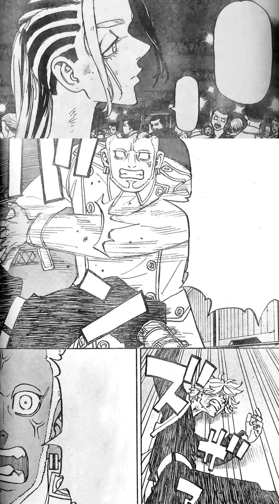
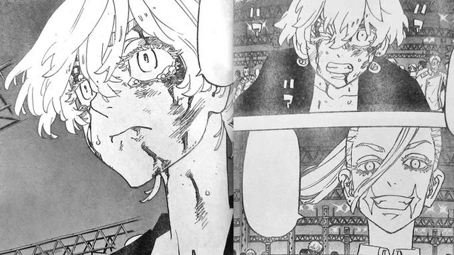

Tokyo Revengers chap 250 đề cập tới diễn biến trận đấu giữa Akkun và Shion. Thật bất ngờ khi trận đấu này diễn ra quá chóng vánh. Sau vài khung thoại, Akkun bất ngờ đánh gục Shion chỉ với một cú đấm. Cựu tổng trưởng Hắc Long đời 9 bất tỉnh nhân sự, chiến thắng dành cho Akkun một cách đầy bất ngờ.
Ở diễn biến khác, Inupi hỏi Waka sao lại gia nhập Kantou Manji trong khi anh từng là thành viên Hắc Long và cả Brahma. Waka trả lời: "Đi mà hỏi tên đằng sau mày ấy!" Đúng lúc này thì Benkei xuất hiện. Anh ta ngay lập tức đánh vào đầu Inupi và cảnh báo "tao không ngọt ngào như Waka đâu". Trong các trang truyện cuối của Tokyo Revengers chap 250 thì Senju nói với Haruchiyo rằng cô sẽ không đánh trận này. Senju xin lỗi về những gì xảy ra ngày hôm ấy. Haruchiyo không mảy may quan tâm tới lời nói của em gái mình. Anh ta đưa tay lên môi và nói rằng Senju chẳng biết gì về chuyện đã thật sự xảy ra cả.
